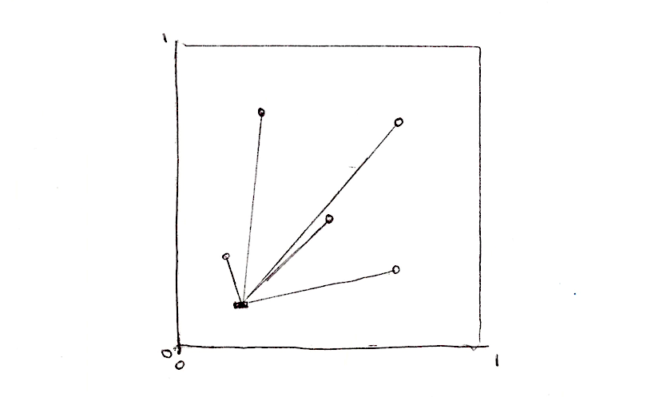
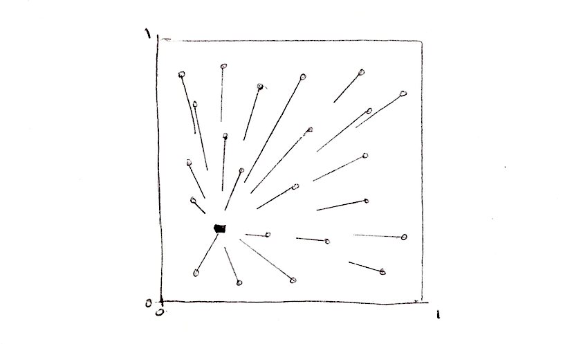
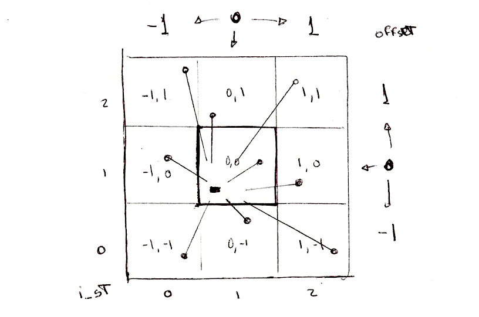
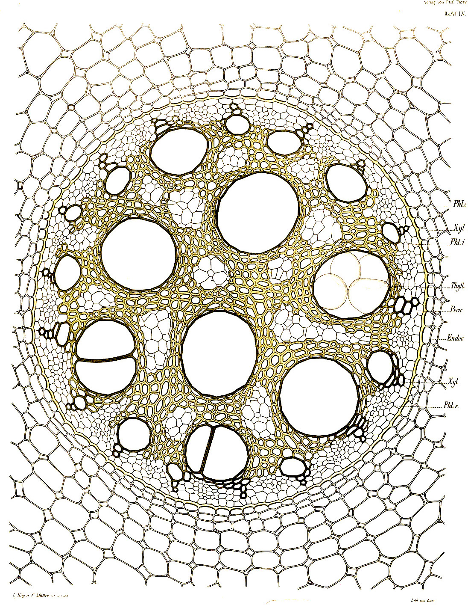
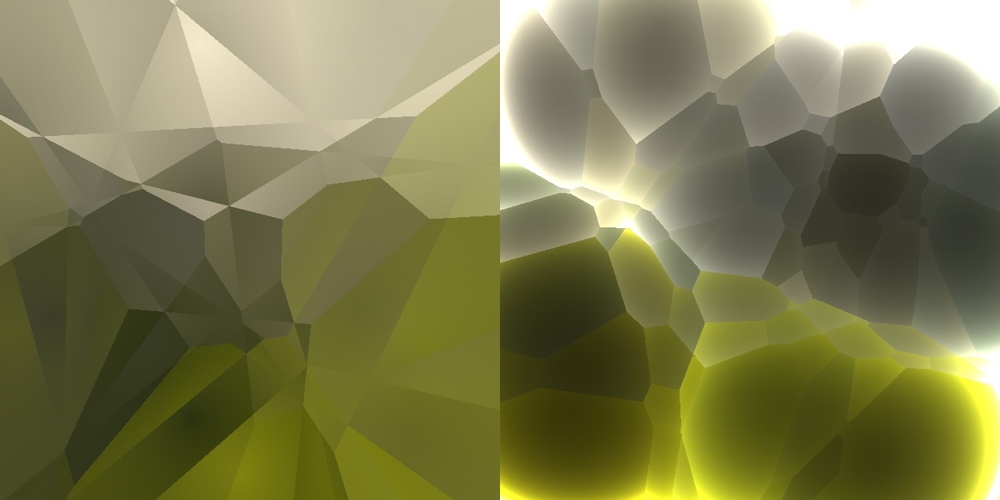
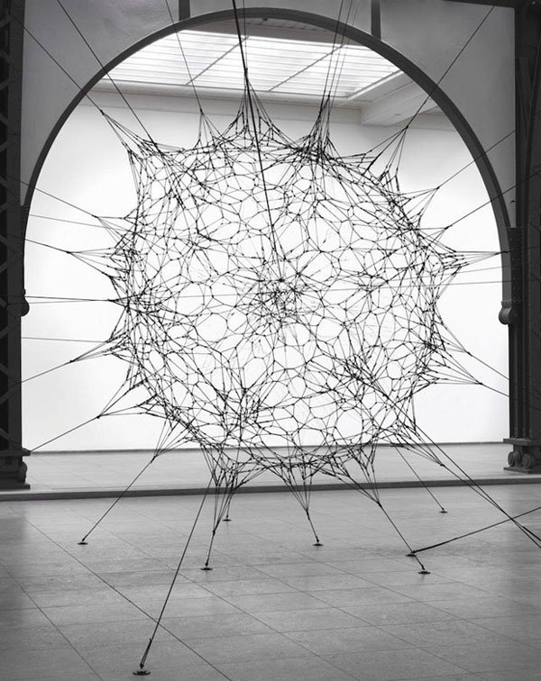
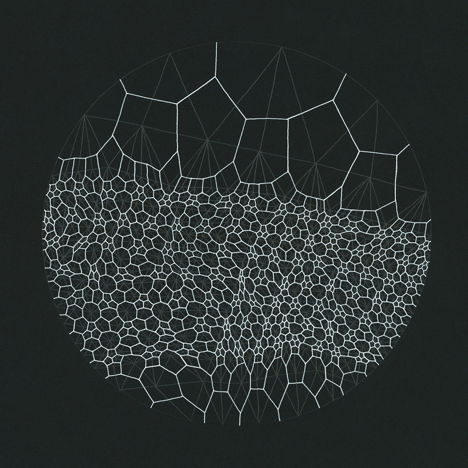
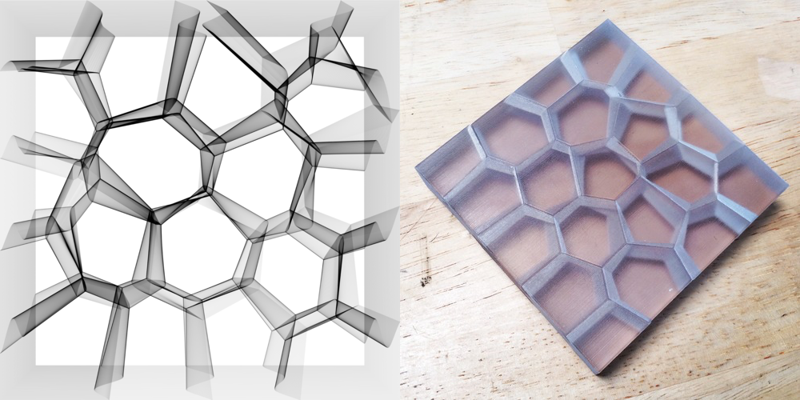
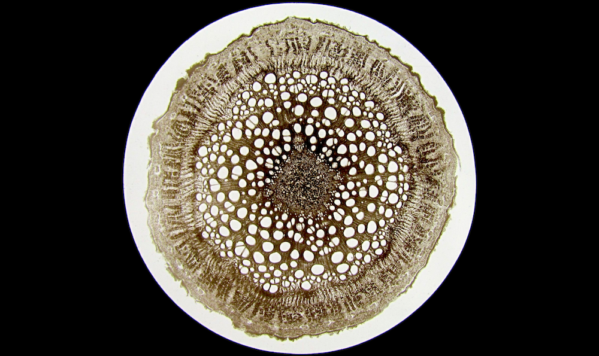

12
网格噪声（Cellular Noise）
1996 年，在原始的 Perlin Noise 发布六年后，Perlin 的 Simplex Noise 发布五年前，Steven Worley 写了一篇名为“A Cellular Texture Basis Function”的论文。在这篇论文里，他描述了一种现在被广泛使用的程序化纹理技术。
要理解它背后的原理，我们需要从迭代开始思考。你可能已经知道迭代是什么意思：对，就是使用 for 循环。GLSL 的 for 循环中，只有一个需要注意的：我们检查循环是否继续的次数必须是一个常数（const）. 所以，没有动态循环——迭代的次数必须是固定的。
网格噪声基于距离场，这里的距离是指到一个特征点集最近的点的距离。比如说我们要写一个 4 个特征点的距离场，我们应该做什么呢？对每一个像素，计算它到最近的特征点的距离。也就是说，我们需要遍历所有 4 个特征点，计算他们到当前像素点的距离，并把最近的那个距离存下来。
float min_dist = 100.; // A variable to store the closest distance to a point
min_dist = min(min_dist, distance(st, point_a));
min_dist = min(min_dist, distance(st, point_b));
min_dist = min(min_dist, distance(st, point_c));
min_dist = min(min_dist, distance(st, point_d));

这种做法不是很优雅，但至少行得通。现在让我们用数组和 for 循环重写。
float m_dist = 100.; // minimum distance
for (int i = 0; i < TOTAL_POINTS; i++) {
float dist = distance(st, points[i]);
m_dist = min(m_dist, dist);
}
注意看我们用一个 for 循环遍历特征点集的数组，用一个 min() 函数来获得最小距离。下面是以上想法的简要的实现：
// Author: @patriciogv
// Title: 4 cells DF
#ifdef GL_ES
precision mediump float;
#endif
uniform vec2 u_resolution;
uniform vec2 u_mouse;
uniform float u_time;
void main() {
vec2 st = gl_FragCoord.xy/u_resolution.xy;
st.x *= u_resolution.x/u_resolution.y;
vec3 color = vec3(.0);
// Cell positions
vec2 point[5];
point[0] = vec2(0.83,0.75);
point[1] = vec2(0.60,0.07);
point[2] = vec2(0.28,0.64);
point[3] = vec2(0.31,0.26);
point[4] = u_mouse/u_resolution;
float m_dist = 1.; // minimum distance
// Iterate through the points positions
for (int i = 0; i < 5; i++) {
float dist = distance(st, point[i]);
// Keep the closer distance
m_dist = min(m_dist, dist);
}
// Draw the min distance (distance field)
color += m_dist;
// Show isolines
// color -= step(.7,abs(sin(50.0*m_dist)))*.3;
gl_FragColor = vec4(color,1.0);
}
上面的代码中，其中一个特征点分配给了鼠标位置。把鼠标放上去玩一玩，你可以更直观地了解上面的代码是如何运行的。然后试试：
- 你可以让其余的几个特征点也动起来吗？
- 在读完关于形状的章节后，想象一些关于距离场的有意思的用法。
- 如果你要往距离场里添加更多的特征点怎么办？如果我们想动态地添加减少特征点数怎么办？
平铺和迭代
你可能注意到 GLSL 对 for 循环和 数组 似乎不太友好。如前所说，循环不接受动态的迭代次数。还有，遍历很多实例会显著地降低着色器的性能。这意味着我们不能把这个方法用在很大的特征点集上。我们需要寻找另一个策略，一个能利用 GPU 并行架构优势的策略。

解决这个问题的一个方法是把空间分割成网格。并不需要计算每一个像素点到每一个特征点的距离，对吧？已经知道每个像素点是在自己的线程中运行，我们可以把空间分割成网格（cells），每个网格对应一个特征点。另外，为避免网格交界区域的偏差，我们需要计算像素点到相邻网格中的特征点的距离。这就是 Steven Worley 的论文中的主要思想。最后，每个像素点只需要计算到九个特征点的距离：他所在的网格的特征点和相邻的八个网格的特征点。我们已经在图案，随机和噪声这些章节介绍了如何把空间分割成网格，希望你已经熟悉这项技术。
// Scale
st *= 3.;
// Tile the space
vec2 i_st = floor(st);
vec2 f_st = fract(st);
那么，计划是什么呢？我们将使用网格坐标（存储在整数坐标 i_st 中）来构造特征点的随机位置。random2f 函数接受一个 vec2 类型参数，返回给我们一个 vec2 类型的随机位置。所以，在每个网格内，我们有一个特征点在随机位置上。
vec2 point = random2(i_st);
网格内的每个像素点（存储在浮点坐标 f_st 中）都会计算它到那个随机点的距离。
vec2 diff = point - f_st;
float dist = length(diff);
结果看起来就像这样：

我们还需要计算像素点到相邻网格中随机点的距离，而不只是当前的网格。我们需要 遍历 所有相邻网格。不是所有网格，仅仅是那些和当前网格相邻的网格。从网格坐标来说，就是 x 坐标从 -1 （左）到 1 （右）， y 坐标从 -1 （下）到 1 （上）。一个 9 个网格的 3x3 区域可以用两个 for 循环遍历：
for (int y= -1; y <= 1; y++) {
for (int x= -1; x <= 1; x++) {
// Neighbor place in the grid
vec2 neighbor = vec2(float(x),float(y));
...
}
}

现在，我们可以在双 for 循环中计算相邻网格中随机点的位置，只需要加上相邻网格对当前网格的偏移量。
...
// Random position from current + neighbor place in the grid
vec2 point = random2(i_st + neighbor);
...
剩下的部分就是计算像素点到那个随机点的距离，并把最近的距离存到变量 m_dist（minimum distance）里面.
...
vec2 diff = neighbor + point - f_st;
// Distance to the point
float dist = length(diff);
// Keep the closer distance
m_dist = min(m_dist, dist);
...
上面的代码源自这篇 Inigo's Quilez 的文章，他写道：
“可能值得注意的是，上面的代码中有一个很漂亮的技巧。多数实现都存在精度问题，因为他们是在“域”空间（如“世界”或“对象”空间）内产生随机点，这可能是里原点任意远的。要解决这个问题，可以使用更高精度的数据类型，或更聪明些。我的实现不是在“域”空间（如“世界”或“对象”空间）内产生随机点，而是在“网格”空间内：一旦提取了着色点的整数和小数部分，我们当前的网格就确定了，我们所关心的就是这个网格周围发生了什么，意味着我们可以将所有坐标的整数部分放在一起，从而节省了许多精度位。事实上，一个常规的 voronoi 实现中，从着色点减去随机特征点时，点坐标的整数部分简单地消除掉了。上面的实现中，我们甚至不会让这种消除发生，因为我们正在把所有的计算移到“网格”空间。这个技巧可以让你处理这种情况： 你想要把 voronoi 用在整个星球上——可以简单地将输入替换为双精度，执行 floor() 和 fract() 计算，其余的计算仍使用浮点数，省去了将整个实现改成双精度的成本。当然，同样的技巧也适用于 Perlin Noise 模式（但是我还没有在任何地方看到过它的实现或记录）。”
简要重述一遍：我们把空间分割成网格，计算每个像素点到它所在网格中的那个特征点的距离，和它到相邻的八个网格中的特征点的距离，结果是一个距离场，如下所示：
// Author: @patriciogv
// Title: CellularNoise
#ifdef GL_ES
precision mediump float;
#endif
uniform vec2 u_resolution;
uniform vec2 u_mouse;
uniform float u_time;
vec2 random2( vec2 p ) {
return fract(sin(vec2(dot(p,vec2(127.1,311.7)),dot(p,vec2(269.5,183.3))))*43758.5453);
}
void main() {
vec2 st = gl_FragCoord.xy/u_resolution.xy;
st.x *= u_resolution.x/u_resolution.y;
vec3 color = vec3(.0);
// Scale
st *= 3.;
// Tile the space
vec2 i_st = floor(st);
vec2 f_st = fract(st);
float m_dist = 1.; // minimum distance
for (int y= -1; y <= 1; y++) {
for (int x= -1; x <= 1; x++) {
// Neighbor place in the grid
vec2 neighbor = vec2(float(x),float(y));
// Random position from current + neighbor place in the grid
vec2 point = random2(i_st + neighbor);
// Animate the point
point = 0.5 + 0.5*sin(u_time + 6.2831*point);
// Vector between the pixel and the point
vec2 diff = neighbor + point - f_st;
// Distance to the point
float dist = length(diff);
// Keep the closer distance
m_dist = min(m_dist, dist);
}
}
// Draw the min distance (distance field)
color += m_dist;
// Draw cell center
color += 1.-step(.02, m_dist);
// Draw grid
color.r += step(.98, f_st.x) + step(.98, f_st.y);
// Show isolines
// color -= step(.7,abs(sin(27.0*m_dist)))*.5;
gl_FragColor = vec4(color,1.0);
}
进一步探索:
- 缩放空间。
- 你有其它办法让那些特征点动起来吗？
- 如果我们想要加入一个鼠标位置作为其中一个特征点怎么办？
- 有没有其它办法构造这个距离场，除了
m_dist = min(m_dist, dist);之外？ - 用这个距离场你可以创造出什么有意思的图案？
这个算法也可以从特征点而非像素点的角度理解。在那种情况下，算法可以表述为：每个特征点向外扩张生长，直到它碰到其它扩张的区域。这反映了自然界的生长规则。生命的形态是由内部扩张、生长的力量和限制性的外部力量共同决定的。模拟这种行为的算法以 Georgy Voronoi 命名。

Voronoi 算法
用网格噪声构造 Voronoi 图远没有看上去的那么难。我们只需要保留一些关于最近的特征点的额外信息。我们将要用到一个叫 m_point 的 vec2 类型变量存储像素点到最近的特征点的向量，而不只是距离。
...
if( dist < m_dist ) {
m_dist = dist;
m_point = point;
}
...
注意在下面的代码中，我们不再使用 min 来计算最近距离，而是用一个普通的 if 语句。为什么？因为当一个新的更近的特征点出现的时候，我们还需要保存它的位置（32 行至 37行）。
// Author: @patriciogv
// Title: 4 cells voronoi
#ifdef GL_ES
precision mediump float;
#endif
uniform vec2 u_resolution;
uniform vec2 u_mouse;
uniform float u_time;
void main() {
vec2 st = gl_FragCoord.xy/u_resolution.xy;
st.x *= u_resolution.x/u_resolution.y;
vec3 color = vec3(.0);
// Cell positions
vec2 point[5];
point[0] = vec2(0.83,0.75);
point[1] = vec2(0.60,0.07);
point[2] = vec2(0.28,0.64);
point[3] = vec2(0.31,0.26);
point[4] = u_mouse/u_resolution;
float m_dist = 1.; // minimum distance
vec2 m_point; // minimum position
// Iterate through the points positions
for (int i = 0; i < 5; i++) {
float dist = distance(st, point[i]);
if ( dist < m_dist ) {
// Keep the closer distance
m_dist = dist;
// Kepp the position of the closer point
m_point = point[i];
}
}
// Add distance field to closest point center
color += m_dist*2.;
// tint acording the closest point position
color.rg = m_point;
// Show isolines
color -= abs(sin(80.0*m_dist))*0.07;
// Draw point center
color += 1.-step(.02, m_dist);
gl_FragColor = vec4(color,1.0);
}
注意那个移动的（鼠标位置下面那个）细胞的颜色是如何根据它的位置而改变的。那是因为它的颜色由最近特征点决定。
就像我们之前所做的那样，现在是扩大规模的时候，转而使用 Steven Worley 的论文中的方法。试着自己实现它。你可以通过点击下面的示例来获取帮助。注意 Steven Worley 的原始方法中，每个网格的特征点数是可变的，对大多数网格来说不止一个。在他的 C 语言实现中，这是用来提早退出来加速循环。GLSL 循环不允许动态的迭代次数，所以你可能更希望一个网格对应一个特征点。
一旦你弄清楚了这个算法，想想它有什么有趣、有创意的用途。




优化 Voronoi
在 2011 年, Stefan Gustavson 优化了 Steven Worley 的算法，仅仅对一个 2x2 的矩阵作遍历（而不是 3x3 的矩阵）。这显著地减少了工作量，但是会在网格边缘制造人工痕迹。看看下面的例子。
Later in 2012 Inigo Quilez wrote an article on how to make precise Voronoi borders.

Inigo 在 Voronoi 上的实验并没有就此停止。2014 年，他写了一篇非常漂亮的文章，提出一种他称作为 voro-noise 的噪声，可以让常规噪声和 voronoi 逐渐地融合。用他的话说：
“尽管有这样的相似之处，但事实上，两种模式中网格的使用方式都是不同的。噪声会内插或平均随机值（如值噪声），而 Voronoi 是计算到最近特征点的距离。平滑双线性插值和最小值评估是两个非常不同的操作，或者……它们是否能用更广义的方法组合？如果是这样，那么噪声和 Voronoi 模式都可以被看作是一种更一般的以网格为基础的模式生成器？”
现在，是时候仔细观察事物，去接受自然的启发，并用这项技术发现你自己的风景！
